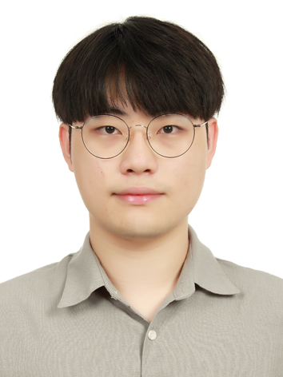

|
Seongwoong Cho
seongwoongjo [at] kaist.ac.kr
I am a M.S. student at KAIST School of
Computing, advised by Seunghoon Hong.
I am interested in data-efficient generalization to
out-of-distribution (OOD) tasks. Specifically, I have been focusing on
building few-shot generalists that can generalize to both unseen tasks
and unseen domains. I am excited to explore technologies across various fields
in Machine Learning, including Computer Vision, Natural Language Processing, and Reinforcement Learning.
CV
/
Google
Scholar
/
GitHub
/
LinkedIn
|

|
News
Sep 2024: Meta-Controller was accepted to NeurIPS 2024.
|
Research
* denotes equal contribution.
|
Meta-Controller: Few-Shot Imitation of Unseen Embodiments and Tasks in Continuous Control
Seongwoong Cho*, Donggyun Kim*,
Jinwoo Lee, Seunghoon Hong
Accepted to NeurIPS, 2024
|
Chameleon: A Data-Efficient Generalist for Dense Visual Prediction in the Wild
Donggyun Kim, Seongwoong Cho, Semin Kim, Chong Luo, Seunghoon Hong
ECCV, 2024 (ORAL Presentation)
paper /
|
Universal Few-shot Learning
of
Dense Prediction Tasks with Visual Token
Matching
Donggyun Kim, Jinwoo Kim, Seongwoong Cho,
Chong Luo, Seunghoon Hong
ICLR, 2023 (Outstanding Paper
Award)
paper /
code
|
Multi-task Neural processes
Donggyun Kim, Seongwoong Cho,
Wonkwang Lee, Seunghoon Hong
ICLR, 2022
paper /
code
|
Experience
Waddle Inc.
AI developer, 2020.07-2020.12
Pavilion Inc.
Co-founder and AI developer, 2019.04-2020.04
NCSOFT ASR Group
Intern, 2018.12-2019.02
|
Honors
Outstanding Paper Award, ICLR 2023
(as
a coauthor)
Silver Prize, Samsung Humantech Paper
Award, 2023 (as a coauthor)
1st Place, KAIST-Qualcomm Innovation Awards' Multimodal Emotional Recognition Competition, 2020
17th Place (over 400 teams), NIPA AI Online Competition, 2019
16th Place (over 200 teams), NIPA AIStarthon Competition, 2019
1st Place, KAIST-Qualcomm Innovation Awards' Speech emotional recognition competition, 2019
Development Award (4th Place) , E*5 KAIST, 2019
2nd Place, SNU Startup Camp, 2017
Recipient, KAIST Dean's List, Spring 2017 / Fall 2020
|
Last updated: Sep 2024
|
Built from Jon Barron's academic
website
|
|
{kind=link}